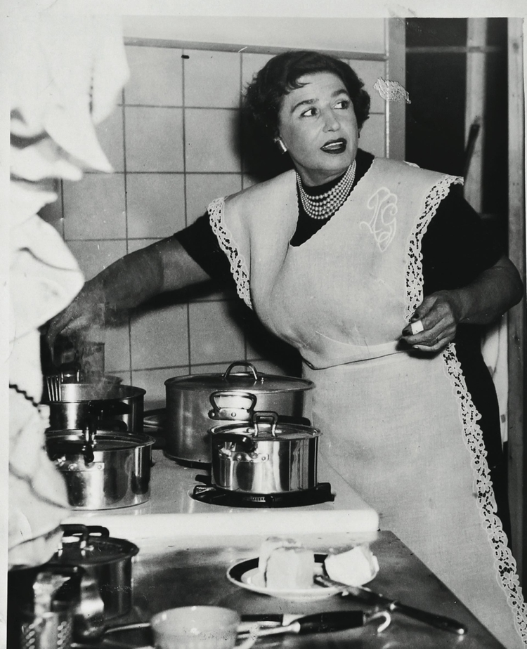
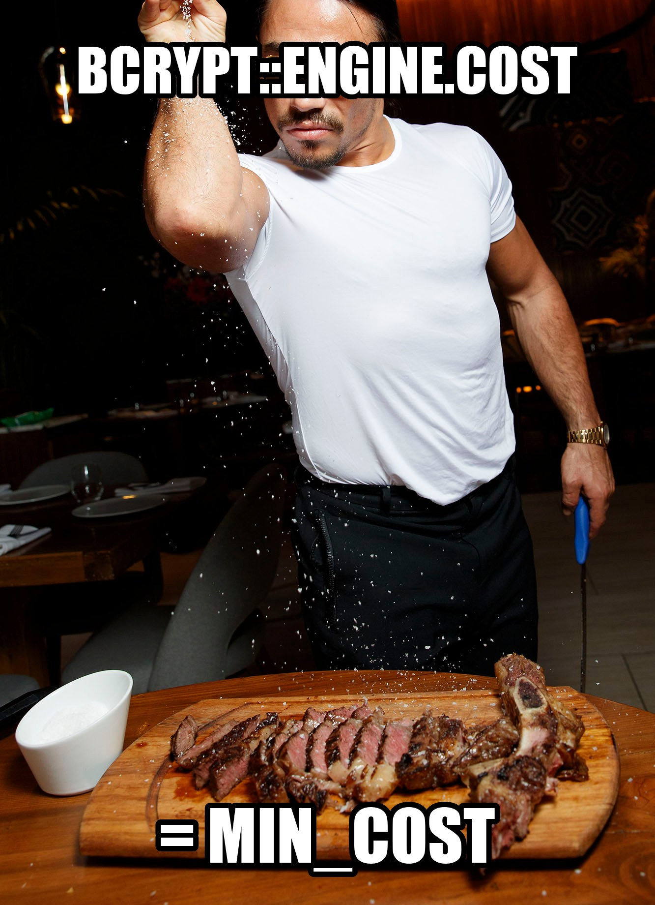
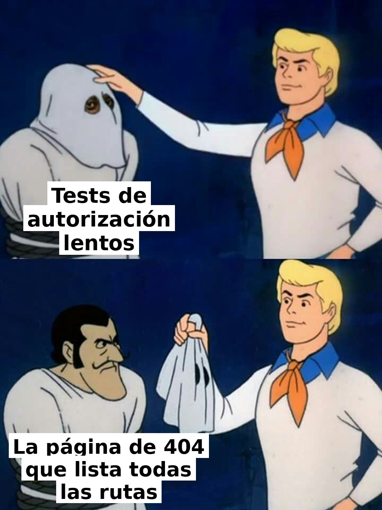
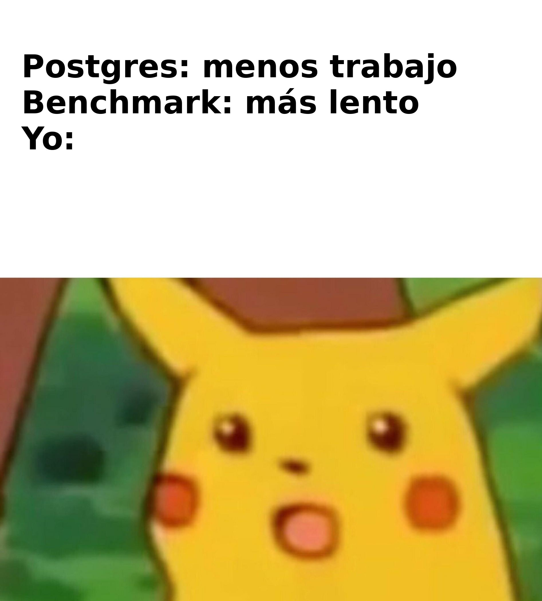

Hoy: una suite de tests 5× más rápida,
sin sacar ni un solo test.
@fesilvajacquier · Meetup Ruby Sur · 20 de octubre de 2026
Esta charla dura menos
que mi suite de tests.

# test/test_helper.rb
# parallelize(workers: :number_of_processors)Comentada desde el primer commit.
La suite usaba 1 hornalla de 8.
2,7× borrando un carácter

Devise ya bajaba el costo en test.
Pero solo para Devise.
Nuestro código hasheaba códigos de firma con BCrypt::Password.create a costo 12. Un hash: 1,6 s. El test más lento: 29 s.
# test/test_helper.rb
BCrypt::Engine.cost = BCrypt::Engine::MIN_COSTBCrypt::Password.create en tu app
Cada 404 renderizaba la página de desarrollo, con todas las rutas de la app: ~0,7 s por request. En una app multi-tenant, «un extraño recibe 404» es un test que se repite mucho.
# config/environments/test.rb
config.consider_all_requests_local = falseSiempre prendido.
Nadie leía el reporte.
Redibuja la terminal
después de cada test.
Con raise = false:
nunca falla, solo loguea.
En test, Rails loguea en debug: cada query se formatea
y se escribe en log/test.log, que llega a gigas.
# config/environments/test.rb
config.log_level = ENV.fetch("RAILS_LOG_LEVEL", "warn")# config/environments/test.rb
ActiveSupport.on_load(:active_record_postgresqladapter) do
self.create_unlogged_tables = true
endUnlogged tables: Postgres no escribe el WAL, el log que usa para recuperarse de un crash.
En CI, además: fsync, synchronous_commit y full_page_writes en off. Tip de @fatkodima ↗

El primer benchmark dijo que unlogged tables era más lento.
Ese paso corría sobre bases recién creadas: sin estadísticas, con la caché fría. Todos los demás usaban bases calientes.
No estaba midiendo la receta.
Estaba midiendo el horno.
ANALYZE.relpersistence antes de cada corrida.Con el horno caliente: logged 168 s · unlogged 152 s
Suite completa, segundos de reloj, notebook con 4 núcleos. Cada barra suma un cambio a la anterior.
2,1× en GitHub Actions. Con 2 procesos, paralelizar da 2× como máximo.
El resto lo ponen los otros ingredientes.
En una notebook con núcleos de sobra, los costos chicos casi no mueven el reloj.
En un runner con 2 CPUs, cada segundo de CPU ahorrado se nota.
# test/test_helper.rb
parallelize(workers: :number_of_processors)
BCrypt::Engine.cost = BCrypt::Engine::MIN_COST
# config/environments/test.rb
config.consider_all_requests_local = false
config.log_level = ENV.fetch("RAILS_LOG_LEVEL", "warn")
ActiveSupport.on_load(:active_record_postgresqladapter) do
self.create_unlogged_tables = true
end
Bullet.enable = true
# Gemfile
gem "simplecov"
gem "minitest-reporters"¿Preguntas?
@fesilvajacquier